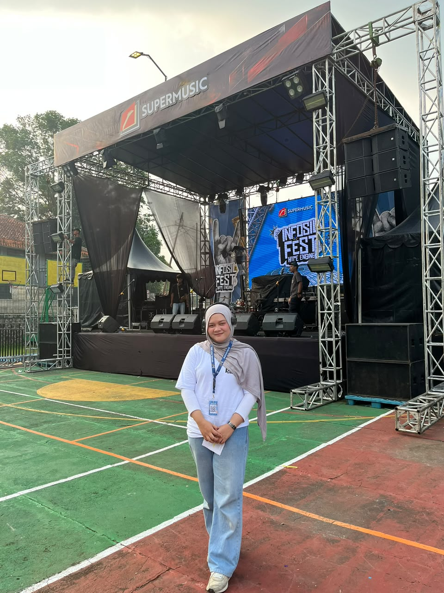
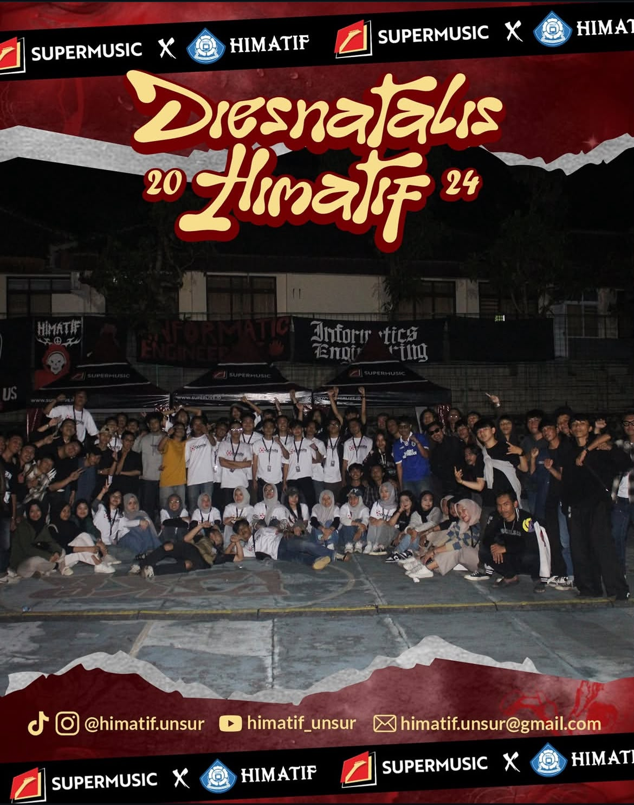
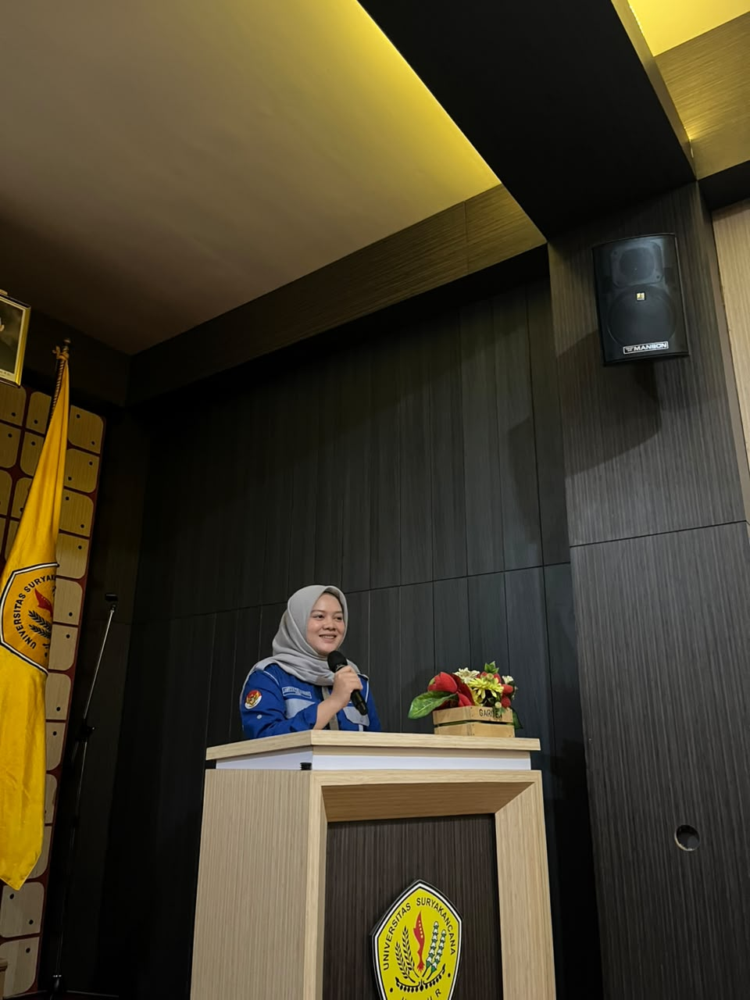

Instruktur Robotik
MyRobo School of Robotics Cianjur
Mengajar robotika berbasis praktik, menyusun RPP dan materi, mengelola jadwal, serta mendampingi proyek siswa.
Fresh Graduate Teknik Informatika · Cianjur, Indonesia
Memahami kebutuhan, menyusun alur yang jelas, lalu mengubahnya menjadi sistem yang dapat digunakan dan diuji.
02 / EXPERIENCE
Pengalaman teknis, pembelajaran, dan koordinasi yang membentuk cara saya bekerja secara terstruktur.
Mengajar robotika berbasis praktik, menyusun RPP dan materi, mengelola jadwal, serta mendampingi proyek siswa.
Mengelola persuratan, dokumen pengajuan, notulensi, jadwal, dan persiapan administrasi praktikum.
Mendampingi praktikum pemrograman, basis data, web, mobile, analisis sistem, dan machine learning.
Mengajar Python dan dasar pengembangan web melalui sesi privat berbasis proyek.
Menganalisis proses bisnis dan membangun sistem pemesanan serta pengelolaan jamaah secara end-to-end.
Menuntaskan 906 jam pembelajaran serta mengembangkan backend dan arsitektur cloud untuk capstone.
11 / ACHIEVEMENTS
SYSTEM ANALYSIS · FULL-STACK · FUNCTIONAL TESTING
Sistem pemesanan dan pengelolaan jamaah Haji & Umrah untuk menggantikan proses pendaftaran, pembayaran, dan pembagian fasilitas yang sebelumnya konvensional.
SYSTEM ANALYSIS · NLP · API INTEGRATION
Sistem konsultasi akademik dengan klasifikasi intent Decision Tree dan rekomendasi studi berbasis aturan akademik.
CLOUD COMPUTING · BACKEND · ML INTEGRATION
Aplikasi manajemen keuangan mobile dengan rekomendasi keuangan dan deteksi anomali transaksi.
SOCIAL INNOVATION · WEB DEVELOPMENT
Platform informasi dan kolaborasi pemuda Karang Taruna Cianjur yang saya kembangkan mandiri sejak identifikasi masalah hingga pengujian.
FULL-STACK · PAYMENT INTEGRATION · DIGITAL TICKETING
Sistem pemesanan tiket konser dengan pembayaran Xendit, verifikasi webhook, tiket digital, dan QR Code.
08 / OTHER PROJECTS
10 / SKILLS
Dari memahami kebutuhan, merancang sistem, membangun solusi, hingga memastikan implementasinya berjalan sesuai harapan.
Requirements Analysis · BPMN · UML · ERD
Laravel · Express.js · Python · REST API
MySQL · Cloud SQL · API Integration · Webhook
Google Cloud · Cloud Run · Deployment · Monitoring
Functional Testing · API Testing · Test Cases · Debugging
Git · GitHub · Swagger · Visual Paradigm
09 / ORGANIZATION & EVENTS
Pengalaman mengelola program organisasi dan berkoordinasi langsung di balik panggung.
Terlibat dalam program pengembangan internal organisasi dan kegiatan kemahasiswaan. Berkontribusi dalam proses pengaderan lebih dari 100 mahasiswa baru, menginisiasi program Magang Himpunan yang memberikan pengalaman berorganisasi bagi lebih dari 20 mahasiswa, serta terlibat dalam pelaksanaan berbagai kegiatan seperti MABIM, Makrab, SOSFAK, LDKO, POSTIKA, INFOSIL, dan COMITS. Selain itu, turut membantu koordinasi kegiatan, pembagian tugas, serta persiapan kebutuhan acara.
Berpartisipasi dalam program Pengembangan Sumber Daya Mahasiswa yang berfokus pada pengembangan potensi, keterlibatan, dan kapasitas mahasiswa Fakultas Teknik. Berkontribusi dalam perencanaan serta pelaksanaan berbagai kegiatan kemahasiswaan dan dipercaya menjadi Project Chair pada Seminar Teknik. Dalam pelaksanaannya, turut mengoordinasikan panitia, menyiapkan kebutuhan kegiatan, membagi tugas, serta memastikan rangkaian acara berjalan sesuai perencanaan.

MEI 2026 Infosil Fest Assistant Stage ManagerBerkontribusi dalam pelaksanaan Infosil Fest sebagai Assistant Stage Manager dengan membantu mengatur alur acara di area panggung, berkoordinasi dengan pengisi acara dan tim terkait, serta memastikan setiap sesi berjalan sesuai rundown yang telah disusun.

OKTOBER 2024 Grand Closing COMITS Stage Manager · Dies Natalis HIMATIFBertanggung jawab sebagai Stage Manager pada Grand Closing COMITS dalam rangka Dies Natalis HIMATIF. Mengatur jalannya kegiatan di area panggung, mengoordinasikan pergantian sesi dan penampilan, serta memastikan rangkaian acara berjalan sesuai rundown.

DESEMBER 2025 The Power of Mindset Ketua Pelaksana · BEM FT UNSURMemimpin pelaksanaan seminar teknik “The Power of Mindset” sebagai Ketua Pelaksana. Mengoordinasikan panitia, membagi tugas antar divisi, memantau persiapan kegiatan, serta memastikan kebutuhan dan rangkaian acara dapat terlaksana sesuai perencanaan.
LET’S CONNECT
Saya terbuka untuk peluang entry-level, kolaborasi proyek, dan percakapan mengenai pengembangan sistem serta teknologi.